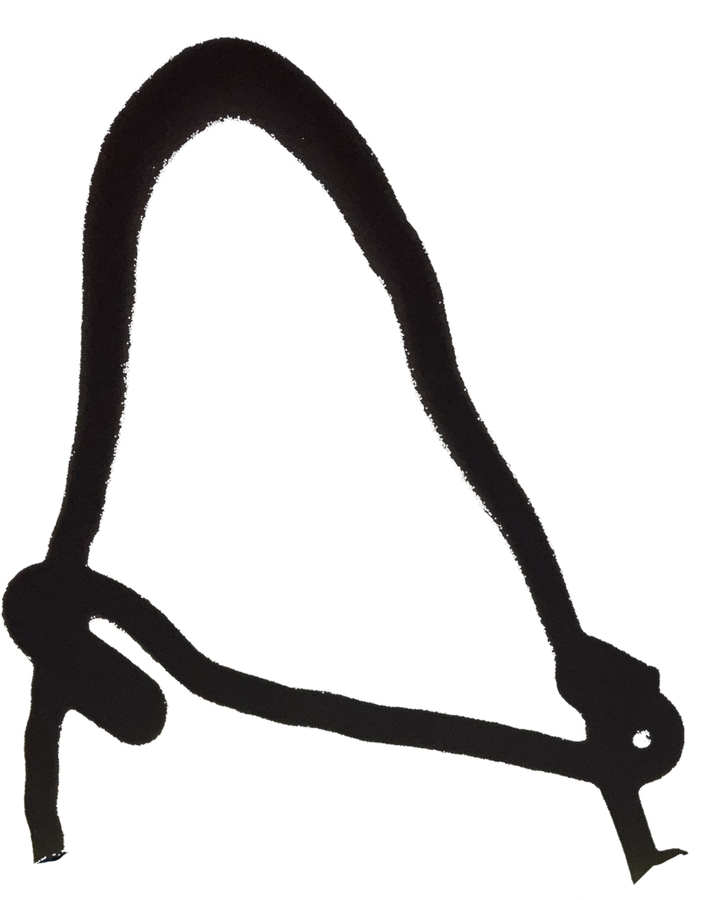
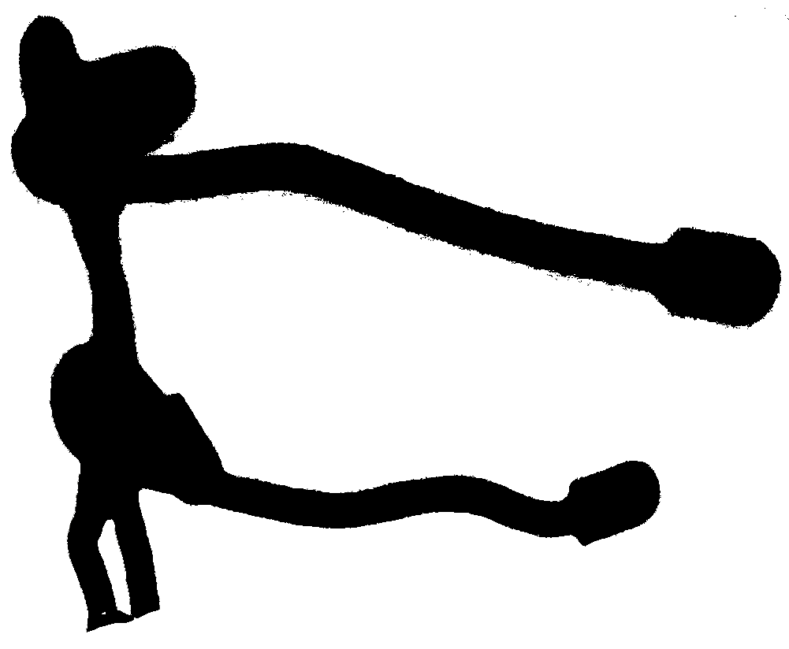
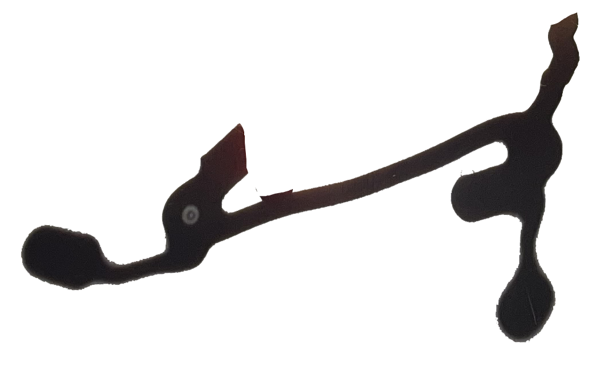
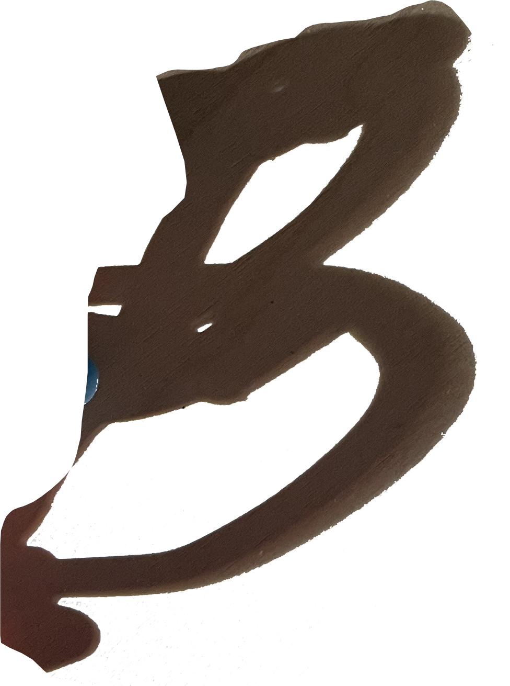

thr☉wing shade
A typeface based on time and place
How?
- Making three dimensional forms for the letters of the latin alphabet, and creating letter forms from the shadows
- Thinking about outlines v punchs
- Considering how readable / recognizable I want the letters to be
Who else? Fred Eerdekens



